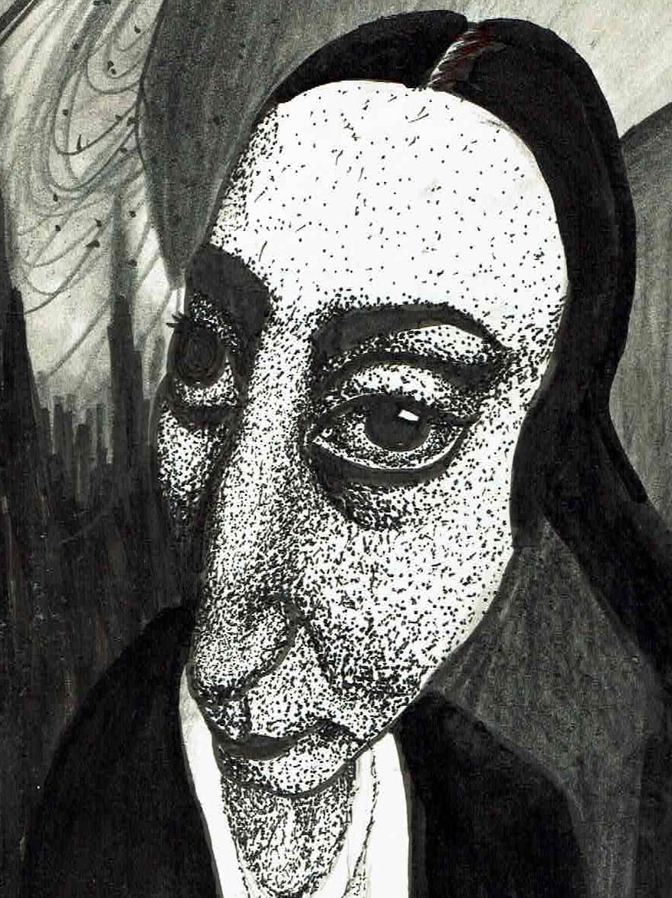

Anointed Gaze
About The Piece
This piece began with a distorted image that mirrored how dissociation feels—like watching the world blur while being just barely present. I leaned into that distortion, using stippling and graphite to echo the grainy, vibrating sensation of zoning out.
The figure’s gaze is heavy and warped, reflecting the strange beauty of burnout and overstimulation. Ink and graphite build layers of texture and contrast, like perception folding in on itself.
Anointed Gaze is a visual meditation on absence, burnout, and the quiet moments when your mind drifts somewhere else.